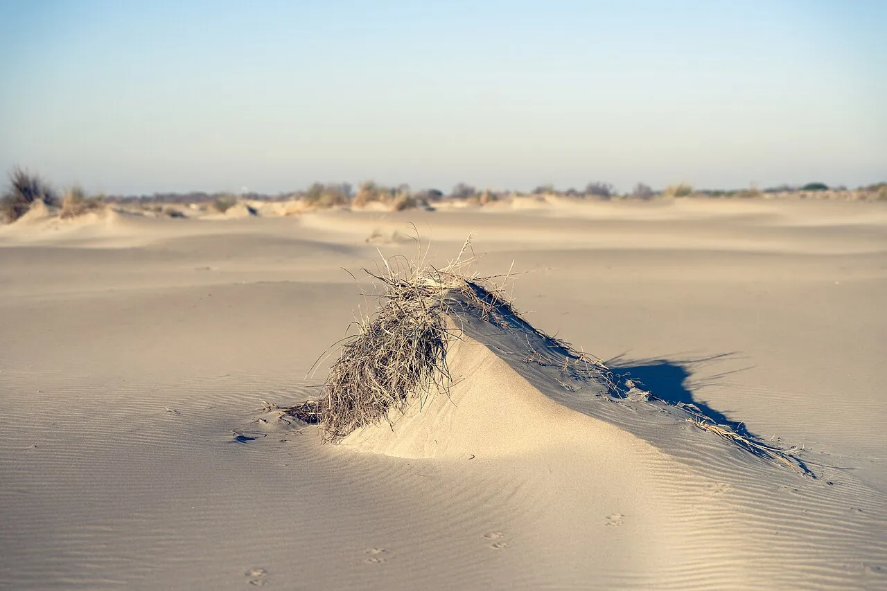

Plage de l’Espiguette
Gard, France · kitesurf, windsurf, baignade

Immense plage sauvage de Camargue gardoise, plate et dégagée, balayée par la tramontane et le mistral. Un terrain de jeu rare pour la glisse tractée en Méditerranée.
- Lieu
- Gard, France
- Niveau
- Intermédiaire
- Activités
- kitesurf, windsurf, baignade
- Type d'eau
- Mer / océan
- Coordonnées
- 43.49, 4.15 (position approximative du secteur)
Dangers à connaître
- Vent de terre fort : il éloigne du rivage.
- Espace naturel protégé : reste hors des dunes.
Le conseil d'Ocean Buddy
Respecte les zones de navigation balisées l’été et garde tes distances avec les baigneurs.
Ouvrir dans Ocean Buddy Télécharger sur l'App Store
Source : Fiche Ocean Buddy · septembre 2026 · à vérifier localement.